NIST IR 8333 日本語訳
英語タイトル : Workshop Summary Report for “Cybersecurity Risks in Consumer Home Internet of Things (IoT) Products” Virtual Workshop日本語タイトル : 「Cybersecurity Risks in Consumer Home Internet of Things (IoT) Devices」バーチャルワークショップ概要報告書
公開日 : 2021-03-29
原文URL : https://csrc.nist.gov/pubs/ir/8333/final
翻訳編集 : 自動生成（有志による非公式の日本語訳）, 原文取得日 : 2026-10-31, 訳文 : 160 / 160 ブロック
[要約] NIST IR 8333 は、2020年10月に開催された NIST の Cybersecurity Risks in Consumer Home Internet of Things (IoT) Devices バーチャルワークショップでの議論と知見を要約した報告書です。NIST は、消費者向け家庭用デバイス分野をよりよく理解するために、2019年上半期に入手可能だった多数のデバイスのサイバーセキュリティ機能について観察結果を収集し、ドラフト NISTIR 8267 として公表しました。この情報はワークショップの基礎となり、ワークショップでは、消費者向け家庭用 IoT デバイスのサイバーセキュリティに関する懸念について、コミュニティからさらに意見が集められました。報告書は、概要と主な要点、今後の取り組み、附属書として参加者の投票結果を示しています。
NISTIR 8333
NISTIR 8333
Workshop Summary Report for “Cybersecurity Risks in Consumer Home Internet of Things (IoT) Devices” Virtual Workshop
「Cybersecurity Risks in Consumer Home Internet of Things (IoT) Devices」バーチャルワークショップ概要報告書
Katerina N. Megas
Michael Fagan
Barbara Cuthill
Mary Raguso
John Wiltberger
Katerina N. Megas
Michael Fagan
Barbara Cuthill
Mary Raguso
John Wiltberger
This publication is available free of charge from:
https://doi.org/10.6028/NIST.IR.8333
本刊行物は、次の場所から無料で入手できます:
https://doi.org/10.6028/NIST.IR.8333
NISTIR 8333
NISTIR 8333
Workshop Summary Report for “Cybersecurity Risks in Consumer Home Internet of Things (IoT) Devices” Virtual Workshop
「Cybersecurity Risks in Consumer Home Internet of Things (IoT) Devices」バーチャルワークショップ概要報告書
Katerina N. Megas
Michael Fagan
Barbara Cuthill
Applied Cybersecurity Division
Information Technology Laboratory
Katerina N. Megas
Michael Fagan
Barbara Cuthill
応用サイバーセキュリティ部門
情報技術研究所
Mary Raguso
John Wiltberger
The MITRE Corporation
McLean, VA
Mary Raguso
John Wiltberger
The MITRE Corporation
McLean, VA
This publication is available free of charge from:
https://doi.org/10.6028/NIST.IR.8333
本刊行物は、次の場所から無料で入手できます:
https://doi.org/10.6028/NIST.IR.8333
March 2021
2021年3月
U.S. Department of Commerce
Gina Raimondo, Secretary
米国商務省
Gina Raimondo 長官
National Institute of Standards and Technology
James K. Olthoff, Performing the Non-Exclusive Functions and Duties of the Under Secretary of Commerce for Standards and Technology & Director, National Institute of Standards and Technology
国立標準技術研究所
James K. Olthoff、商務次官（標準・技術担当）兼国立標準技術研究所所長の非専属的な職務および任務を代行
National Institute of Standards and Technology Interagency or Internal Report 8333
23 pages (March 2021)
米国国立標準技術研究所 省庁間報告書または内部報告書 8333（National Institute of Standards and Technology Interagency or Internal Report 8333）
23 ページ（2021年3月）
This publication is available free of charge from:
https://doi.org/10.6028/NIST.IR.8333
本刊行物は、次の場所から無料で入手できます:
https://doi.org/10.6028/NIST.IR.8333
Certain commercial entities, equipment, or materials may be identified in this document in order to describe an experimental procedure or concept adequately. Such identification is not intended to imply recommendation or endorsement by NIST, nor is it intended to imply that the entities, materials, or equipment are necessarily the best available for the purpose.
原本PDFの抜粋画像
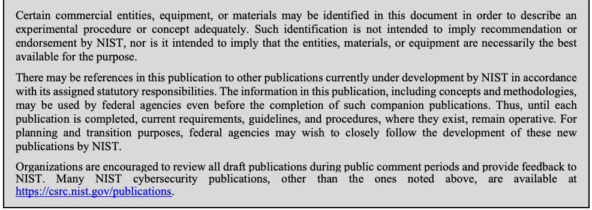
本書では、実験手順や概念を適切に説明するために、特定の商業的な事業体、機器、資材に言及している場合があります。そのような言及は、NIST による推奨や推薦を意味するものではなく、それらの事業体、資材、機器がその目的に必ずしも最適であることを意味するものでもありません。
There may be references in this publication to other publications currently under development by NIST in accordance with its assigned statutory responsibilities. The information in this publication, including concepts and methodologies, may be used by federal agencies even before the completion of such companion publications. Thus, until each publication is completed, current requirements, guidelines, and procedures, where they exist, remain operative. For planning and transition purposes, federal agencies may wish to closely follow the development of these new publications by NIST.
本刊行物には、NIST が法令で定められた責務に従って策定中の他の刊行物への言及が含まれている場合があります。概念や方法論を含め、本刊行物の情報は、そうした関連刊行物の完成前であっても、連邦機関が利用してかまいません。したがって、各刊行物が完成するまでは、現行の要件、ガイドライン、手順が存在する場合は、引き続き有効です。計画および移行のため、連邦機関は、NIST によるこれらの新しい刊行物の策定状況を注意深く追うことを検討してもよいです。
Organizations are encouraged to review all draft publications during public comment periods and provide feedback to NIST. Many NIST cybersecurity publications, other than the ones noted above, are available at https://csrc.nist.gov/publications.
各組織は、パブリックコメントの期間中にすべてのドラフト刊行物を確認し、NIST にフィードバックを提供することが推奨されます。上記以外の NIST のサイバーセキュリティ関連刊行物の多くは、https://csrc.nist.gov/publications で入手できます。
Comments on this publication may be submitted to:
National Institute of Standards and Technology
Attn: Applied Cybersecurity Division, Information Technology Laboratory
100 Bureau Drive (Mail Stop 2000) Gaithersburg, MD 20899-2000
Email: iotsecurity@nist.gov
本刊行物へのコメントは、次の宛先に提出できます:
National Institute of Standards and Technology
Attn: Applied Cybersecurity Division, Information Technology Laboratory
100 Bureau Drive (Mail Stop 2000) Gaithersburg, MD 20899-2000
Email: iotsecurity@nist.gov
All comments are subject to release under the Freedom of Information Act (FOIA).
すべてのコメントは、情報自由法（FOIA）に基づく公開の対象となります。
Reports on Computer Systems Technology
コンピュータシステム技術に関する報告書
The Information Technology Laboratory (ITL) at the National Institute of Standards and Technology (NIST) promotes the U.S. economy and public welfare by providing technical leadership for the Nation’s measurement and standards infrastructure. ITL develops tests, test methods, reference data, proof of concept implementations, and technical analyses to advance the development and productive use of information technology. ITL’s responsibilities include the development of management, administrative, technical, and physical standards and guidelines for the cost-effective security and privacy of other than national security-related information in federal information systems.
米国国立標準技術研究所（NIST）の情報技術研究所（ITL）は、国の測定・標準のインフラストラクチャに技術的なリーダーシップを提供することにより、米国の経済と公共の福祉を促進しています。ITL は、情報技術の発展と生産的な利用を推進するため、テスト、テスト方法、参照データ、概念実証の実装、技術分析を開発しています。ITL の責務には、連邦情報システムにおける国家安全保障に関連しない情報について、費用対効果の高いセキュリティおよびプライバシーを確保するための、管理上、運用上、技術上、物理上の標準およびガイドラインの策定が含まれます。
Abstract
概要
This report provides a summary of the discussion and findings from the NIST Cybersecurity Risks in Consumer Home Internet of Things (IoT) Devices virtual workshop in October 2020. NIST Interagency Report (NISTIR) 8259, Foundational Cybersecurity Activities for IoT Device Manufacturers, and NISTIR 8259A, IoT Device Cybersecurity Capability Core Baseline, provide general guidance on how manufacturers can approach their role of fulfilling their customers’ cybersecurity needs and capabilities. As discussed in those documents, particular sectors and use cases may require more specific guidance than what is included in NISTIR 8259A’s core baseline for Internet of Things (IoT) devices. To better understand the consumer home device sector, NIST collected observations on the cybersecurity device capabilities in a number of devices available in the first half of 2019. These observations were published in Draft NISTIR 8267, Security Review of Consumer Home Internet of Things (IoT) Products. The information in Draft NISTIR 8267 was foundational for the NIST Cybersecurity Risks in Consumer Home Internet of Things (IoT) Devices virtual workshop. The workshop gathered further community input on the concerns with consumer home IoT device cybersecurity.
本報告書は、2020年10月に開催された NIST の Cybersecurity Risks in Consumer Home Internet of Things (IoT) Devices バーチャルワークショップでの議論と知見を要約したものです。NIST 省庁間報告書（NISTIR）8259、Foundational Cybersecurity Activities for IoT Device Manufacturers と、NISTIR 8259A、IoT Device Cybersecurity Capability Core Baseline は、製造者が顧客のサイバーセキュリティのニーズと機能を満たすという自らの役割にどう取り組めるかについて、一般的なガイダンスを示しています。これらの文書で論じられているとおり、特定の分野やユースケースでは、NISTIR 8259A のモノのインターネット（IoT）デバイス向けコアベースラインに含まれるものよりも具体的なガイダンスが必要になる場合があります。NIST は、消費者向け家庭用デバイス分野をよりよく理解するために、2019年上半期に入手可能だった多数のデバイスのサイバーセキュリティ機能について、観察結果を収集しました。これらの観察結果は、ドラフト NISTIR 8267、Security Review of Consumer Home Internet of Things (IoT) Products として公表されました。ドラフト NISTIR 8267 の情報は、NIST の Cybersecurity Risks in Consumer Home Internet of Things (IoT) Devices バーチャルワークショップの基礎となりました。このワークショップでは、消費者向け家庭用 IoT デバイスのサイバーセキュリティに関する懸念について、コミュニティからさらに意見を集めました。
Keywords
キーワード
consumer home devices; cybersecurity baseline; Internet of Things (IoT); privacy; securable computing devices; security requirements.
消費者向け家庭用デバイス、サイバーセキュリティベースライン、モノのインターネット（IoT）、プライバシー、セキュリティ保護可能なコンピューティングデバイス、セキュリティ要件。
Audience
想定読者
The main audiences for this publication are IoT device manufacturers, consumer organizations, and other stakeholders in the consumer home IoT market. This publication may also help IoT device customers or integrators who are incorporating IoT devices intended for the home market into their residence or business, especially small business networks.
本刊行物の主な想定読者は、IoT デバイスの製造者、消費者団体、および消費者向け家庭用 IoT 市場のその他の利害関係者です。また、家庭市場向けの IoT デバイスを自宅や事業所（特に小規模事業者のネットワーク）に導入する、IoT デバイスの顧客やインテグレーターにも、役立つ場合があります。
Acknowledgments
謝辞
The authors wish to thank all contributors to this publication, including the participants in this workshop and other interactive sessions; the individuals and organizations from the public and private sectors, including manufacturers for various sectors and several manufacturer trade organizations who provided feedback on the preliminary public content; and colleagues at NIST, The MITRE Corporation, and Scarfone Cybersecurity who offered invaluable input and expertise.
著者は、本刊行物に貢献したすべての方々に感謝します。これには、本ワークショップやその他の対話形式のセッションの参加者、予備的な公開内容にフィードバックを寄せてくださった、さまざまな分野の製造者や複数の製造者団体を含む官民の個人および組織、そして貴重な意見と専門知識を提供してくださった NIST、The MITRE Corporation、Scarfone Cybersecurity の同僚が含まれます。
Table of Contents
目次
List of Appendices
附属書の一覧
1 Introduction
1 はじめに
To better understand the consumer home Internet of Things (IoT) device sector, the National Institute of Standards and Technology (NIST) collected observations on the cybersecurity capabilities in a number of devices available in the first half of 2019. These technical observations were based on approaches to implementing the cybersecurity capabilities described in NIST Interagency Report (NISTIR) 8259A, IoT Device Cybersecurity Capability Core Baseline [1]. The observations were published in Draft NISTIR 8267, Security Review of Consumer Home Internet of Things (IoT) Products [2].
米国国立標準技術研究所（NIST）は、消費者向け家庭用のモノのインターネット（IoT）デバイス分野をよりよく理解するために、2019年上半期に入手可能だった多数のデバイスのサイバーセキュリティ機能について、観察結果を収集しました。これらの技術的な観察は、NIST 省庁間報告書（NISTIR）8259A、IoT Device Cybersecurity Capability Core Baseline [1] に記載されたサイバーセキュリティ機能の実装方法に基づいています。観察結果は、ドラフト NISTIR 8267、Security Review of Consumer Home Internet of Things (IoT) Products [2] として公表されました。
The information in Draft NISTIR 8267 and comments received during the public comment period were foundational for NIST’s October 22, 2020 virtual workshop titled Cybersecurity Risks in Consumer Home Internet of Things (IoT) Devices. This workshop gathered further community input on the concerns with consumer home IoT device cybersecurity. It included stakeholders from industry, trade associations, consumer advocacy groups, international bodies, and academia. The purpose of this workshop was to obtain stakeholder feedback on topics related to future directions for NIST, including its National Cybersecurity Center of Excellence’s (NCCoE) work in the consumer home IoT space, and to identify and discuss critical issues and barriers to implementing the core baseline in NISTIR 8259A, IoT Device Cybersecurity Capability Core Baseline [1], in consumer IoT products.
ドラフト NISTIR 8267 の情報と、パブリックコメント期間中に寄せられたコメントは、2020年10月22日に NIST が開催した、Cybersecurity Risks in Consumer Home Internet of Things (IoT) Devices と題するバーチャルワークショップの基礎となりました。このワークショップでは、消費者向け家庭用 IoT デバイスのサイバーセキュリティに関する懸念について、コミュニティからさらに意見を集めました。参加したのは、産業界、業界団体、消費者擁護団体、国際機関、学界の利害関係者です。このワークショップの目的は、NIST の今後の方向性（国立サイバーセキュリティ・センター・オブ・エクセレンス（NCCoE）の消費者向け家庭用 IoT 分野での取り組みを含む）に関連するトピックについて、利害関係者からのフィードバックを得るとともに、NISTIR 8259A、IoT Device Cybersecurity Capability Core Baseline [1] のコアベースラインを消費者向け IoT 製品に実装する際の重大な問題と障壁を特定し、議論することでした。
1.1 About the NIST Cybersecurity for IoT Program
1.1 NIST の IoT サイバーセキュリティプログラムについて
The mission of the NIST Cybersecurity for IoT program [3] is to cultivate trust in IoT and foster an environment that enables innovation on a global scale through standards, guidance, and related tools. The Cybersecurity for IoT program supports the development and application of standards, guidelines, and related tools to improve the cybersecurity of connected devices and the environments in which they are deployed. By collaborating with stakeholders across government, industry, consumer advocacy groups, international bodies, and academia, the program aims to fulfil this mission and foster an environment that sparks innovation on a global scale.
NIST の IoT サイバーセキュリティプログラム [3] の使命は、標準、ガイダンス、関連ツールを通じて、IoT への信頼を醸成し、世界規模でのイノベーションを可能にする環境を育むことです。IoT サイバーセキュリティプログラムは、接続されたデバイスおよびそれらが配備される環境のサイバーセキュリティを向上させるために、標準、ガイドライン、関連ツールの策定と適用を支援します。政府、産業界、消費者擁護団体、国際機関、学界の利害関係者と協力することで、プログラムはこの使命を果たし、世界規模でイノベーションを促す環境を育むことを目指しています。
1.2 About the Cybersecurity Risks in Consumer Home IoT Devices Virtual Workshop
1.2 Cybersecurity Risks in Consumer Home IoT Devices バーチャルワークショップについて
The free, publicly available virtual workshop featured an overview of NIST’s Cybersecurity for IoT Program and panels that highlighted the many considerations impacting the cybersecurity of home IoT products. These considerations include unique cybersecurity challenges associated with home IoT products and unique barriers to implementing the core baseline in NISTIR 8259A, IoT Device Cybersecurity Capability Core Baseline [1] in consumer IoT products. After the panels, attendees broke into small groups for facilitated discussions about the most critical issues impacting the implementation of stronger cybersecurity in consumer IoT devices. The workshop concluded with attendees reassembling to hear reports from each breakout facilitator—tying together any overriding themes and/or issues for future exploration.
無料で一般に公開されたこのバーチャルワークショップでは、NIST の IoT サイバーセキュリティプログラムの概要紹介と、家庭用 IoT 製品のサイバーセキュリティに影響する多くの考慮事項に焦点を当てたパネルが行われました。これらの考慮事項には、家庭用 IoT 製品に特有のサイバーセキュリティ上の課題と、NISTIR 8259A、IoT Device Cybersecurity Capability Core Baseline [1] のコアベースラインを消費者向け IoT 製品に実装する際の特有の障壁が含まれます。パネルの後、出席者は少人数のグループに分かれ、消費者向け IoT デバイスにより強力なサイバーセキュリティを実装するうえで最も重大な問題について、進行役つきの議論を行いました。ワークショップは、出席者が再び集まって各分科会の進行役からの報告を聞き、今後の検討に向けた全体を貫くテーマや問題をまとめて終了しました。
The workshop agenda is presented in Table 1 and on the NIST event information page [4].
ワークショップのアジェンダは、表 1 および NIST のイベント情報ページ [4] に示されています。
Table 1: Workshop Agenda
表 1: ワークショップのアジェンダ
| Time | Activity and Presenters |
|---|---|
| 12:00 – 12:20 PM | Welcome and introduction: Kat Megas, Program Manager, NIST Cybersecurity for IoT Program Mike Fagan, Technical Lead, NIST Cybersecurity for IoT Program
|
| 12:20 – 1:20 PM | Panel 1: What makes a consumer IoT device different?
|
| 1:20 – 1:30 PM | Break |
| 1:30 – 2:30 PM | Panel 2: What barriers exist to meeting the baseline in NISTIR 8259A IoT device Cybersecurity Capability Core Baseline in Consumer Devices?
|
| 2:30 – 2:45 PM | Break Transition to Plenary Session |
| 2:45 – 3:45 PM | Breakout Sessions Facilitated discussions on what tools and guidance are needed to build and support more secure consumer home IoT devices |
| 3:45 – 4:00 PM | Break Transition to Plenary Session |
| 4:00 – 4:20 PM | Readout from Breakout Sessions Facilitator Panel |
| 4:20 – 4:30 PM | Concluding Remarks: Kat Megas, Program Manager, NIST Cybersecurity for IoT Program |
| 時間 | 内容と発表者 |
|---|---|
| 12:00 – 12:20 PM | 歓迎の挨拶と紹介: Kat Megas, Program Manager, NIST Cybersecurity for IoT Program Mike Fagan, Technical Lead, NIST Cybersecurity for IoT Program
|
| 12:20 – 1:20 PM | パネル 1: 消費者向け IoT デバイスを特徴づける違いとは何か
|
| 1:20 – 1:30 PM | 休憩 |
| 1:30 – 2:30 PM | パネル 2: 消費者向けデバイスで NISTIR 8259A IoT device Cybersecurity Capability Core Baseline のベースラインを満たすうえで、どのような障壁があるか
|
| 2:30 – 2:45 PM | 休憩 全体セッションへの移行 |
| 2:45 – 3:45 PM | 分科会 より安全な消費者向け家庭用 IoT デバイスを構築・支援するために、どのようなツールとガイダンスが必要かについての、進行役つきの議論 |
| 3:45 – 4:00 PM | 休憩 全体セッションへの移行 |
| 4:00 – 4:20 PM | 分科会の報告 進行役によるパネル |
| 4:20 – 4:30 PM | 閉会の挨拶: Kat Megas, Program Manager, NIST Cybersecurity for IoT Program |
The workshop drew approximately 338 participants, including attendees, panelists, and moderators, from 13 countries. These participants came from many types of organizations, including:
ワークショップには、13 か国から、出席者、パネリスト、司会者を合わせて約 338 人が参加しました。参加者は、次のようなさまざまな種類の組織から来ていました。
•Fourteen academic institutions from across the country
•全国の 14 の学術機関
•Nine non-profit organizations, including consumer electronics and engineering, and business/trade associations
•消費者向け電子機器・エンジニアリング関連、およびビジネス／業界団体を含む 9 つの非営利組織
•Approximately 60 private sector businesses, including major corporations, IoT device manufacturers, small businesses, and high-technology firms
•大企業、IoT デバイスの製造者、中小企業、ハイテク企業を含む、約 60 の民間企業
•Fourteen management consulting firms
•14 の経営コンサルティング会社
•Sixteen federal, state, and local government organizations, including civil, defense, and intelligence agencies
•文民機関、国防機関、情報機関を含む、16 の連邦・州・地方政府組織
NIST sought a wide range of workshop attendees involved in the consumer home IoT market to hear their views. Consumers have a broad range of technical expertise, but most are much less familiar with cybersecurity than the specialists employed by businesses and government. On the other hand, the market is exploding with new consumer IoT devices that incorporate a variety of ideas and approaches to implementing device functionality and cybersecurity. The NIST Cybersecurity for IoT program is attempting to identify the critical elements of this complex market that will make a substantial difference in the cybersecurity capabilities available in consumer home IoT devices.1
NIST は、消費者向け家庭用 IoT 市場に関わる幅広いワークショップ出席者を求め、その意見を聞きました。消費者の技術的な専門知識の幅は広いものの、そのほとんどは、企業や政府に勤務する専門家に比べて、サイバーセキュリティにはるかになじみがありません。一方で、市場には、デバイスの機能とサイバーセキュリティを実装するための多様なアイデアや手法を取り入れた、新しい消費者向け IoT デバイスが爆発的に増えています。NIST の IoT サイバーセキュリティプログラムは、消費者向け家庭用 IoT デバイスで利用できるサイバーセキュリティ機能に大きな違いをもたらす、この複雑な市場の重要な要素を特定しようとしています。1
During the workshop panels, participants submitted questions and participated in a series of six polls as a mechanism to share feedback and influence the focus of panel discussions. The poll questions and results are presented in Appendix A. Since workshop attendees created a by-definition, self-selected survey group and poll responses were entirely voluntary, poll results should be not viewed as providing generalizable results for their questions. During the workshop breakouts, which consisted of significantly smaller groups of participants, facilitated discussions encouraged open conversation and the exchange of ideas.
ワークショップのパネルの間、参加者は質問を提出し、フィードバックを共有してパネルディスカッションの焦点に影響を与える仕組みとして、6 件の一連の投票に参加しました。投票の質問と結果は附属書 A に示します。ワークショップの出席者は、定義上、自己選択による調査グループを形成しており、投票への回答はまったく任意であったため、投票結果を、各質問について一般化できる結果とみなすべきではありません。参加者の人数がはるかに少ない分科会では、進行役つきの議論が、率直な対話と意見交換を促しました。
Videos of each workshop segment are available on the event web page [4]. Based on the participant presentations and stakeholder feedback collected, this report provides a summary of key points, common themes, and a general discussion of possible follow-on activities for NIST’s IoT program.
ワークショップの各セグメントの動画は、イベントのウェブページ [4] で入手できます。本報告書は、参加者の発表と収集した利害関係者のフィードバックに基づいて、要点、共通のテーマの要約と、NIST の IoT プログラムの今後の活動の可能性に関する全般的な議論を示します。
2 Summary and Key Takeaways
2 概要と主な要点
The following takeaways are the ideas, observations, and suggestions that NIST heard from workshop participants and that received significant support from attendees and/or panelists. This workshop was not a forum for developing consensus; rather, the takeaways represent recurrent themes which emerged during the event—not formal positions taken by attendees or participants. While this document seeks to thoroughly summarize discussions and viewpoints expressed by panelists and participants, it cannot capture every thought, opinion, and suggestion provided during the sessions. The takeaways do not represent specific NIST recommendations or guidance; rather, they provide important feedback to the program, and serve as a basis for future conversations with the community.
以下の要点は、NIST がワークショップの参加者から聞いた考え、所見、提案であり、出席者やパネリストの大きな支持を得たものです。このワークショップは、合意を形成する場ではありませんでした。要点は、イベントの間に現れた繰り返しのテーマを表すものであり、出席者や参加者が取った正式な立場ではありません。本書は、パネリストと参加者が述べた議論や見解を網羅的に要約しようとするものですが、セッション中に出されたすべての考え、意見、提案を網羅できるわけではありません。要点は、NIST の特定の推奨事項やガイダンスを表すものではなく、プログラムへの重要なフィードバックとなり、コミュニティとの今後の対話の基礎となるものです。
Takeaway 1: Creating a more secure IoT ecosystem for consumer devices can benefit all manufacturers and the “common good.”
原本PDFの抜粋画像
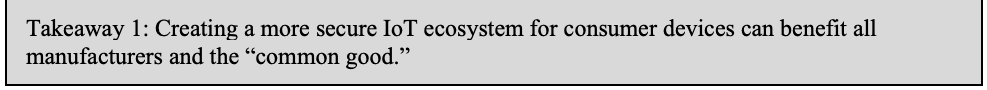
要点 1: 消費者向けデバイスについて、より安全な IoT エコシステムを作り出すことは、すべての製造者と「公共の利益」にとって有益となりえます。
Workshop participants expressed their support for creating a more secure ecosystem for home IoT devices and believe this can benefit the “common good.” Panelist Michelle Richardson said, “We encourage people to design for the masses. We need people to accept that security is a common good.”
ワークショップの参加者は、家庭用 IoT デバイスのより安全なエコシステムを作り出すことを支持する考えを示し、これが「公共の利益」にとって有益となりうると考えています。パネリストの Michelle Richardson は、「私たちは、大衆のために設計することを奨励します。セキュリティが公共の利益であることを、みなさんに受け入れていただく必要があります」と述べました。
Workshop participants discussed some key issues and challenges with defining what this ecosystem might look like, such as:
ワークショップの参加者は、このエコシステムがどのようなものになりうるかを定義するうえでの、いくつかの主な問題と課題について議論しました。たとえば、次のようなものです。
•The Magnitude of the Home IoT Ecosystem—Participants agreed that the sheer size of the home IoT ecosystem is a challenge in and of itself. Panelist Mark Haney explained, “A device may have security, but the host may be vulnerable. Many times, the host is a critical part of the IoT ecosystem. And that ecosystem is vast.” Panelist Maarten Bron added, “When you compare consumer IoT to industrial IoT, the main difference is the sheer size of it. With such a large attack surface, the number of devices increases along with the potential for an attack…attackers study vulnerabilities…Once one device is hacked, it opens up attacks to others.”
•家庭用 IoT エコシステムの規模—参加者は、家庭用 IoT エコシステムの規模の大きさそのものが課題であるという点で一致しました。パネリストの Mark Haney は、「デバイスにセキュリティがあっても、ホストが脆弱である場合があります。ホストは、IoT エコシステムの重要な一部であることが多くあります。そして、そのエコシステムは広大です」と説明しました。パネリストの Maarten Bron は、「消費者向け IoT と産業用 IoT を比べると、主な違いはその規模の大きさです。これほど大きな攻撃対象領域では、デバイスの数が増えるにつれて、攻撃の可能性も高まります……攻撃者は脆弱性を研究しています……一つのデバイスが侵害されると、他のデバイスへの攻撃への道が開かれます」と付け加えました。
•Managing Security Breaches—Mark Haney said, “Devices installed in homes rely on an ecosystem to collect information and make decisions about things in your home. A breach can result in a loss of consumer confidence in a company or technology.” Haney cited self-driving cars as an example of this phenomenon, where the entire industry—not just the individual car manufacturer—experienced a loss in consumer confidence as reports questioning the safety of the technology began to surface. Michelle Richardson added, “There is a lack of consequences for poor design; that is changing. Find problems in systems before there’s an actual breach and enforce against them.”
•セキュリティ侵害の管理—Mark Haney は、「家庭に設置されたデバイスは、情報を収集し、家庭内のことについて判断を下すために、エコシステムに依存しています。侵害によって、企業や技術に対する消費者の信頼が失われる場合があります」と述べました。Haney は、この現象の例として自動運転車を挙げました。この技術の安全性に疑問を呈する報告が出始めると、個々の自動車メーカーだけでなく、業界全体で消費者の信頼が失われました。Michelle Richardson は、「不十分な設計に対する結果責任がない状況がありますが、それは変わりつつあります。実際に侵害が起きる前にシステムの問題を見つけ、それらに対する措置を講じてください」と付け加えました。
•Meeting the Core Baseline—Panelist Mike Bergman said the baseline “is a strong foundational document to build on—not something you live in...engineers need detailed technical requirements.” Workshop participants agreed that having examples of, and more information about how different IoT devices can work together in the home IoT ecosystem is beneficial, and that customers (retailers, enterprises, consumers) need assurances that a home IoT product meets NIST’s core baseline.
•コアベースラインの充足—パネリストの Mike Bergman は、このベースラインは「その上に構築していくための強力な基礎となる文書であり、そこで暮らすようなものではありません……エンジニアには、詳細な技術要件が必要です」と述べました。ワークショップの参加者は、異なる IoT デバイスが家庭用 IoT エコシステム内でどのように連携できるかについて、事例やより多くの情報があることは有益であり、顧客（小売業者、エンタープライズ、消費者）には、家庭用 IoT 製品が NIST のコアベースラインを満たしているという保証が必要であるという点で一致しました。
•Varying Degrees of Knowledge—The home IoT ecosystem is impacted by the fact that manufacturers have different degrees of in-house cybersecurity expertise, skills, and capabilities that can influence how much cybersecurity they are capable of building into home IoT devices.
•知識の程度の差—製造者によって、社内のサイバーセキュリティに関する専門知識、スキル、能力の程度が異なり、それが家庭用 IoT デバイスにどの程度のサイバーセキュリティを組み込めるかに影響することで、家庭用 IoT エコシステムは影響を受けます。
Takeaway 2: Manufacturers are challenged by balancing the design and functionality of consumer IoT devices against maintaining a viable cost structure for their target market.
原本PDFの抜粋画像
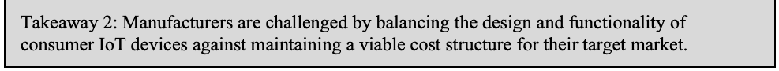
要点 2: 製造者は、消費者向け IoT デバイスの設計および機能と、対象市場に見合った採算の取れるコスト構造の維持との間で、バランスを取ることに苦慮しています。
Manufacturers are in the business of creating products that meet their customers’ needs and goals, which are constantly shifting against a backdrop of perceptions and realities that influence the home IoT market, including:
製造者の事業は、顧客のニーズや目標を満たす製品を作ることですが、それらは、家庭用 IoT 市場に影響する認識や現実を背景に、絶えず変化しています。たとえば、次のようなものです。
•There is a widely held perception among manufacturers that consumers place a higher value on the design/functionality/aesthetics/usability of home IoT devices and a lesser value on security. As a result, manufacturers have invested more resources into creating designs that are feature-rich and user-friendly and less on cybersecurity. Maarten Bron said, “Some research indicates that in general, consumers perceive value in functions/features of a device. For manufacturers, cybersecurity is knowledge/resource intense.” Panelist Rebecca Herold observed that “manufacturers invest more into making the device look good and easy to use.” Bron said that manufacturers do not know where to start in terms of “baking security” into home IoT devices, and cited NISTIRs and other European government agency documents as helpful references for manufacturers.
•製造者の間では、消費者は家庭用 IoT デバイスの設計／機能／美観／使いやすさをより高く評価し、セキュリティはそれほど評価していないという認識が広く持たれています。その結果、製造者は、サイバーセキュリティよりも、機能が豊富でユーザーフレンドリーな設計を作り出すことに、より多くのリソースを投じてきました。Maarten Bron は、「一部の研究によれば、一般に消費者はデバイスの機能や特徴に価値を見出しています。製造者にとって、サイバーセキュリティは知識とリソースを大量に必要とするものです」と述べました。パネリストの Rebecca Herold は、「製造者は、デバイスの見栄えを良くし、使いやすくすることにより多くを投資している」と指摘しました。Bron は、製造者が家庭用 IoT デバイスに「セキュリティを組み込む」うえで、どこから始めればよいか分からないでいると述べ、製造者にとって役立つ参考資料として、NISTIR や欧州の政府機関の他の文書を挙げました。
•Some workshop participants challenged the perception that consumers do not value security as much as they do usability and features. Panelist Jean Camp said, “We’re asking consumers to evaluate risk with no basis to do so. If you give people a default that offers privacy and security, they will choose to pay more. One study showed that consumers will pay on average $17 more for a lightbulb that’s private and secure.” Panelist Rebecca Herold added, “Manufacturers assume that consumers don’t care if security isn’t built in because if they wanted it, they would ask for it. The problem with that belief is that most consumers assume security is already built in and turned on by default.”
•一部のワークショップ参加者は、消費者がセキュリティを、使いやすさや機能ほど重視していないという認識に異議を唱えました。パネリストの Jean Camp は、「私たちは、消費者に、評価する根拠もないままリスクを評価するよう求めています。プライバシーとセキュリティを備えたものを初期設定として提供すれば、人々はより多く支払うことを選びます。ある調査では、プライバシーとセキュリティが確保された電球に対して、消費者は平均して 17 ドル多く支払うことが示されました」と述べました。パネリストの Rebecca Herold は、「製造者は、セキュリティが組み込まれていなくても、欲しければ消費者が求めるはずだから、消費者は気にしていないと考えています。この考え方の問題は、ほとんどの消費者が、セキュリティはすでに組み込まれていて、初期設定で有効になっていると思い込んでいることです」と付け加えました。
•Manufacturers’ delays in adding security features (encryption, adding more powerful processors, locked down interfaces, strong password usage) to home IoT devices may result in increased costs, design changes, or have an impact on functionality. Mark Haney gave an example of having to charge a smart watch battery daily versus weekly. Panelist Andrew Tierney gave another example using multi-factor authentication (MFA): “MFA represents a massive security improvement and stops password phishing. However, because consumers don’t want barriers, some companies are hurt by deploying MFA. Consumers will go elsewhere.” These examples illustrate what can occur when manufacturers add cybersecurity device capabilities that consume substantially more power, and how that can create usability issues.
•製造者が家庭用 IoT デバイスにセキュリティ機能（暗号化、より強力なプロセッサの追加、ロックダウンされたインタフェース、強力なパスワードの使用）を追加するのが遅れると、コストの増加、設計変更、機能への影響が生じる場合があります。Mark Haney は、スマートウォッチのバッテリーを毎週ではなく毎日充電しなければならなくなる例を挙げました。パネリストの Andrew Tierney は、多要素認証（MFA）を使った別の例を挙げました。「MFA はセキュリティを大幅に向上させ、パスワードのフィッシングを防ぎます。しかし、消費者は障壁を望まないため、MFA を導入したことで打撃を受ける企業もあります。消費者は他の企業に移ってしまいます」。これらの例は、製造者が、消費電力が大幅に増えるサイバーセキュリティのデバイス機能を追加した場合に何が起こりうるか、またそれがどのように使いやすさの問題を生じさせるかを示しています。
•Manufacturers must ensure they have adequate hardware to accommodate the customer’s needs, with the understanding that maintaining cybersecurity is an ongoing effort that requires them to supply hardware/software and other infrastructure. Panelist Rob Coombs commented that consumers should be informed how long a manufacturer intends to provide software updates for their devices.
•製造者は、サイバーセキュリティの維持が、ハードウェア／ソフトウェアやその他のインフラストラクチャを供給し続けることを求める継続的な取り組みであることを理解したうえで、顧客のニーズに対応する十分なハードウェアを確保しなければなりません。パネリストの Rob Coombs は、製造者がデバイスのソフトウェア更新をいつまで提供するつもりかを、消費者に知らせるべきだとコメントしました。
Manufacturers must perpetually weigh the benefits of added security with the costs to implement these features and the effect that additional security features can have on device usability and aesthetics. Because manufacturers have gained many insights into their customers’ preferences and behaviors over the years, they are better positioned to meet this challenge.
製造者は、セキュリティを強化することの利点と、これらの機能を実装するコスト、およびセキュリティ機能の追加がデバイスの使いやすさや美観に及ぼしうる影響とを、絶えず比較検討しなければなりません。製造者は長年にわたり、顧客の好みや行動について多くの洞察を得てきたため、この課題に取り組むうえでより有利な立場にあります。
Takeaway 3: Manufacturers can benefit by having a recognized business model around a “connected device lifecycle” that covers the mechanical and information technology (IT) components of a home IoT device.
原本PDFの抜粋画像
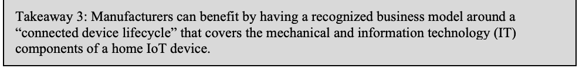
要点 3: 家庭用 IoT デバイスの機械的な構成要素と情報技術（IT）の構成要素の両方を対象とする「接続されたデバイスのライフサイクル」に関する、認知されたビジネスモデルを持つことは、製造者にとって有益となりえます。
Workshop participants discussed some of the key challenges with creating a standard business model or connected device lifecycle that addresses the distinct lifecycles for both the mechanical and IT components of a home IoT device, as follows:
ワークショップの参加者は、家庭用 IoT デバイスの機械的な構成要素と IT の構成要素の、それぞれ異なるライフサイクルに対応する、標準的なビジネスモデルまたは接続されたデバイスのライフサイクルを作成するうえでの、主な課題のいくつかについて議論しました。内容は次のとおりです。
•Because some home IoT devices’ mechanical components have longer lifecycles compared to their IT components, this results in a gap between the expected useful life of the mechanical components compared to the IT components within the same device.
•家庭用 IoT デバイスによっては、機械的な構成要素のライフサイクルが IT の構成要素よりも長いため、同じデバイス内で、機械的な構成要素と IT の構成要素の想定耐用年数に差が生じます。
•Because mechanical components often outlive their IT counterparts, manufacturers often drop IT infrastructures (how secure is it, how long will it last, who provides updates, who performs updates, etc.) because they do not have the technical expertise. Therefore, the IT becomes obsolete, and/or the costs become prohibitively expensive over time. Panelist Mike Bergman said, “Manufacturers don’t have a business model to support a device that lasts 20 years…infrastructures get dropped because manufacturers can’t maintain them.”
•機械的な構成要素は IT の構成要素よりも長持ちすることが多いため、製造者は、技術的な専門知識を持たないという理由で、IT インフラストラクチャ（それはどの程度安全か、どのくらい持続するか、誰が更新を提供するか、誰が更新を実施するか、など）を切り捨てることがよくあります。その結果、IT が陳腐化したり、時間の経過とともにコストが法外に高くなったりします。パネリストの Mike Bergman は、「製造者には、20 年持続するデバイスを支えるビジネスモデルがありません……製造者は維持できないので、インフラストラクチャが切り捨てられます」と述べました。
•Mark Haney observed that companies struggle to maintain their host environments, and said, “You don’t hear a lot about abandoned infrastructure. For instance, a $49 smart night light is no longer IoT capable because its infrastructure was orphaned. Over time, you lose functionality.”
•Mark Haney は、企業が自社のホスト環境を維持するのに苦労していると指摘し、「放棄されたインフラストラクチャについては、あまり耳にしません。たとえば、49 ドルのスマート常夜灯は、インフラストラクチャが見捨てられたために、もう IoT として使えません。時間がたつと、機能が失われていきます」と述べました。
•Participants raised the issue of making subscriptions available to consumers. Mike Bergman explained that manufacturers have started to experiment with subscription models to enable more functionality and to extend the life of the IT infrastructure, but more work is needed in this area.
•参加者は、消費者がサブスクリプションを利用できるようにするという問題を提起しました。Mike Bergman は、製造者がより多くの機能を提供し、IT インフラストラクチャの寿命を延ばすために、サブスクリプションモデルを試し始めているものの、この分野ではさらなる取り組みが必要だと説明しました。
•Consumers are developing more familiarity with maintenance of IT components across their lifecycle. This familiarity will help consumers understand what is required for a viable IT infrastructure. This may be more aspirational at this point. Ideally, this will result in informed consumers valuing the maintenance of a device’s IT infrastructure as they do the maintenance of mechanical components.
•消費者は、ライフサイクル全体にわたる IT の構成要素の保守について、理解を深めつつあります。この理解は、消費者が、実現可能な IT インフラストラクチャに何が必要かを理解するのに役立ちます。これは、現時点ではどちらかといえば願望に近いかもしれません。理想的には、これにより、情報を得た消費者が、機械的な構成要素の保守を重視するのと同じように、デバイスの IT インフラストラクチャの保守を重視するようになります。
Takeaway 4: Consumers cannot bear the sole responsibility of maintaining cybersecurity on IoT devices.
原本PDFの抜粋画像
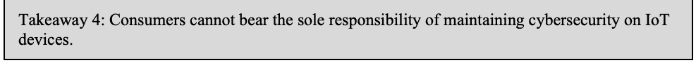
要点 4: 消費者は、IoT デバイスのサイバーセキュリティを維持する責任を、単独で負うことはできません。
Workshop participants generally agreed that consumers are being overwhelmed with maintaining security for IoT devices. Participants shared their diverse views around their perceptions of the consumer’s role in maintaining cybersecurity for their home IoT devices, including:
ワークショップの参加者は、消費者が IoT デバイスのセキュリティを維持することに圧倒されているという点で、おおむね一致しました。参加者は、家庭用 IoT デバイスのサイバーセキュリティを維持するうえでの消費者の役割に対する認識について、次のものを含むさまざまな見解を共有しました。
•Cybersecurity should fall on manufacturers and integrators rather than consumers. Jean Camp said, “Seventy-one percent of IoT medical devices suffer ransomware infections that are caused by the user. People are incapable of making an informed decision without information, but they get blamed when an attack happens.”
•サイバーセキュリティの責任は、消費者ではなく、製造者とインテグレーターが負うべきです。Jean Camp は、「IoT 医療機器の 71 パーセントが、ユーザーに起因するランサムウェア感染を受けています。人々は、情報がなければ十分な情報に基づく判断を下すことができませんが、攻撃が起きると非難されます」と述べました。
•Associations, manufacturers, integrators, and other stakeholders can create minimum security standards that IoT devices should meet before coming to market.
•業界団体、製造者、インテグレーター、その他の利害関係者は、IoT デバイスが市場に出る前に満たすべき最低限のセキュリティ標準を作成できます。
•Consumers expect retailers to sell home IoT devices that meet a minimum cybersecurity standard.
•消費者は、小売業者が、最低限のサイバーセキュリティ標準を満たす家庭用 IoT デバイスを販売することを期待しています。
•Mike Bergman stated that the continued availability of resources such as NISTIR 8259A can improve the cybersecurity of home IoT devices. While the situation has improved over the past five years, more resources and guidance are needed to strengthen the cybersecurity of home IoT devices.
•Mike Bergman は、NISTIR 8259A のようなリソースが引き続き利用できることで、家庭用 IoT デバイスのサイバーセキュリティを向上させられると述べました。状況は過去 5 年間で改善しましたが、家庭用 IoT デバイスのサイバーセキュリティを強化するには、さらに多くのリソースとガイダンスが必要です。
•Manufacturers can build security into IoT devices that conforms to a detailed baseline. Dave Thaler noted that consumers do not view security as a feature for most devices and that if manufacturers are meeting the core baseline, they should convey the benefits of doing so to the consumer in terms the consumer can understand.
•製造者は、詳細なベースラインに適合するセキュリティを IoT デバイスに組み込むことができます。Dave Thaler は、消費者はほとんどのデバイスでセキュリティを機能の一つとはみなしておらず、製造者がコアベースラインを満たしている場合は、そのことによる利点を、消費者が理解できる言葉で消費者に伝えるべきだと指摘しました。
Takeaway 5: Software and patch updates are critical to maintaining security, but a consumer’s ability to deploy them is limited.
原本PDFの抜粋画像
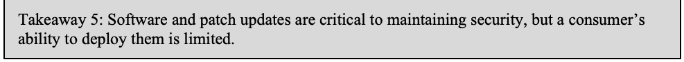
要点 5: ソフトウェアとパッチの更新はセキュリティの維持に不可欠ですが、消費者がそれらを展開する能力には限りがあります。
In a home environment, the consumer is responsible for deploying software updates and patches. These deployments are at the core of home IoT cybersecurity and are critical since unpatched known vulnerabilities remain a common root cause of cybersecurity incidents.
家庭環境では、ソフトウェアの更新とパッチを展開する責任は消費者にあります。これらの展開は、家庭用 IoT サイバーセキュリティの中核であり、パッチが適用されていない既知の脆弱性は、サイバーセキュリティインシデントの一般的な根本原因であり続けているため、極めて重要です。
Workshop participants agreed that the typical customer’s ability to securely configure and launch updates/patches for a device is limited and shared these observations:
ワークショップの参加者は、一般的な顧客が、デバイスの更新／パッチを安全に構成して開始する能力には限りがあるという点で一致し、次の所見を共有しました。
•Consumers often do not understand the benefit of conducting updates or do not recognize the urgency. Jean Camp said, “We can’t blame people for making decisions about security when there’s no information about privacy and security provided to them.” And as Julie Haney pointed out, “Personal responsibility doesn’t always involve taking action. A consumer who buys an IoT device hopes or assumes that it is secure.”
•消費者は、更新を行うことの利点を理解していないか、その緊急性を認識していないことが多くあります。Jean Camp は、「プライバシーとセキュリティに関する情報が提供されていないのに、人々がセキュリティについて下す判断を責めることはできません」と述べました。また、Julie Haney は、「個人の責任は、必ずしも行動を取ることを意味しません。IoT デバイスを購入した消費者は、それが安全であることを期待し、あるいは安全だと思い込んでいます」と指摘しました。
Workshop participants agreed that more education can help consumers understand why updates/patches are important to maintaining the cybersecurity of a device, and the relationship among security, safety, and privacy.
ワークショップの参加者は、教育を拡充することで、更新／パッチがデバイスのサイバーセキュリティの維持になぜ重要なのか、またセキュリティ、安全、プライバシーの関係を、消費者が理解するのに役立つという点で一致しました。
•Even if a consumer is informed about cybersecurity, they may not be able to act on a manufacturer’s recommendation to secure a device for a variety of reasons (e.g., lack of technical ability, unwilling to spend time on making updates, complexity of varied schedules and methods for updates, etc.) Julie Haney said, “We found that people have a fair number of concerns around security…even if the owners want to do something, they don’t know how to go about it.”
•消費者がサイバーセキュリティについて十分な情報を得ていても、さまざまな理由（たとえば、技術的な能力の不足、更新に時間をかけたくない、更新のスケジュールや方法が多様で複雑であることなど）から、デバイスを保護するという製造者の推奨に従って行動できない場合があります。Julie Haney は、「人々はセキュリティについてかなりの数の懸念を持っていることが分かりました……所有者が何かをしたいと思っても、どう進めればよいか分からないのです」と述べました。
•From a manufacturer’s perspective, because of the complexity and size of the home IoT space, they each handle software updates differently. As a result, consumers are having inconsistent experiences with deploying updates, which may explain why consumers express confusion or ambivalence around patching. One solution is for manufacturers to push updates directly to a home IoT device—shifting the burden from consumers by automating software updates/patches.
•製造者の観点からは、家庭用 IoT 分野は複雑で規模が大きいため、各社がソフトウェアの更新を異なる方法で扱っています。その結果、消費者は更新の展開で一貫しない体験をしており、これがパッチ適用について消費者が混乱や迷いを示す理由かもしれません。解決策の一つは、製造者が家庭用 IoT デバイスに直接更新をプッシュすることで、ソフトウェアの更新／パッチを自動化し、消費者の負担を軽減することです。
Takeaway 6: Privacy plays a role in the manufacture and consumption of home IoT devices but is not well understood by consumers.
原本PDFの抜粋画像
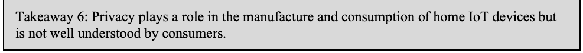
要点 6: プライバシーは、家庭用 IoT デバイスの製造と消費において一定の役割を果たしていますが、消費者にはよく理解されていません。
Consumers value privacy; however, workshop respondents agreed that they lack awareness around how their privacy is impacted when an IoT device is deployed in their homes. Moreover, workshop participants agreed that consumers can better understand the issues around privacy and how it affects them more than they can cybersecurity. Jean Camp said, “Consumers are willing to pay more for security/privacy, but they need information about security/privacy to make informed decisions.” Consumers are also more concerned with infringements on their privacy, but do not feel empowered or know what actions to take to protect themselves. Julie Haney put it simply: “People don’t trust manufacturers to respect their privacy.” All combined, these factors give consumers a sense of discomfort around home IoT devices.
消費者はプライバシーを重視していますが、ワークショップの回答者は、自宅に IoT デバイスを導入したときに自分のプライバシーがどう影響を受けるかについての認識が、消費者に欠けているという点で一致しました。さらに、ワークショップの参加者は、消費者はサイバーセキュリティよりも、プライバシーに関する問題とそれが自分にどう影響するかのほうを、よく理解できるという点で一致しました。Jean Camp は、「消費者はセキュリティ／プライバシーのためにより多く支払う意思がありますが、十分な情報に基づく判断をするには、セキュリティ／プライバシーに関する情報が必要です」と述べました。消費者は、自分のプライバシーの侵害にもより強い懸念を抱いていますが、力を与えられているとは感じておらず、自分を守るために取るべき行動も分かりません。Julie Haney は、「人々は、製造者が自分のプライバシーを尊重してくれるとは信頼していません」と簡潔に述べました。これらすべての要因が重なり、消費者は家庭用 IoT デバイスに対して不安を感じています。
Workshop participants identified some key issues pertaining to privacy and home IoT devices as follows:
ワークショップの参加者は、プライバシーと家庭用 IoT デバイスに関する主な問題をいくつか特定しました。内容は次のとおりです。
•Third Parties—Manufacturers may not routinely include a privacy policy explaining to consumers how their data is collected from their IoT devices and then shared with third parties. Privacy policies that are provided tend not to be easy to find or in plain language. As a result, consumers are left unaware and uninformed about the role of third parties and how much access they have to their information. Workshop participants generally supported greater disclosure, as Rebecca Herold explained: “Consumer IoT devices collect a massive amount of data that is rarely stored within the device, but in a cloud server. That data is shared downstream with other third parties. Consumers don’t know how many third parties have this data because a privacy policy is not presented with details on how the device is used. Privacy is an afterthought, not an integral part of the design.” Maarten Bron shared this caveat: “When it comes to data—if you can’t protect it, don’t collect it.”
•第三者—製造者は、消費者向け IoT デバイスからデータがどのように収集され、第三者と共有されるかを消費者に説明するプライバシーポリシーを、日常的に含めているとは限りません。提供されているプライバシーポリシーも、見つけにくかったり、平易な言葉で書かれていなかったりする傾向があります。その結果、消費者は、第三者の役割や、第三者が自分の情報にどの程度アクセスできるかを知らされず、把握していません。ワークショップの参加者は、Rebecca Herold が説明したように、情報開示の拡充をおおむね支持しました。「消費者向け IoT デバイスは膨大な量のデータを収集しますが、そのデータがデバイス内に保存されることはまれで、クラウドサーバーに保存されます。そのデータは、下流で他の第三者と共有されます。デバイスの使われ方の詳細を示すプライバシーポリシーが提示されないため、消費者は、どれだけの数の第三者がこのデータを持っているかを知りません。プライバシーは設計に不可欠な要素ではなく、後回しにされています」。Maarten Bron は、「データに関しては、保護できないなら収集しないことです」という注意点を共有しました。
•Information—As part of the process of setting up an IoT device, consumers will share personal information such as name, home address, and email address. Participants touched on what might happen to this information should the infrastructure be abandoned but could not reach any conclusions. At the present time, there is no single, predictable model for what happens to that information.
•情報—IoT デバイスの設定の過程で、消費者は氏名、自宅住所、メールアドレスなどの個人情報を共有します。参加者は、インフラストラクチャが放棄された場合にこの情報がどうなるかに触れましたが、結論には至りませんでした。現時点では、その情報がどうなるかについて、単一の予測可能なモデルはありません。
Takeaway 7: Consumer education about home IoT cybersecurity should be an ongoing, shared responsibility among stakeholders.
原本PDFの抜粋画像
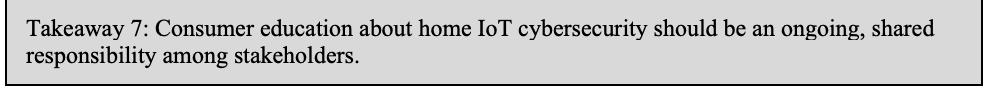
要点 7: 家庭用 IoT のサイバーセキュリティに関する消費者教育は、利害関係者が継続的に共有して担う責任であるべきです。
In the home IoT market, consumers have a range of expectations, assumptions, and levels of awareness around the cybersecurity of these devices. Workshop participants examined some of the challenges around consumer education and home IoT device cybersecurity, which echoed some of the key points raised throughout the workshop discussions, including:
家庭用 IoT 市場では、消費者は、これらのデバイスのサイバーセキュリティについて、さまざまな期待、思い込み、認識の度合いを持っています。ワークショップの参加者は、消費者教育と家庭用 IoT デバイスのサイバーセキュリティをめぐる課題をいくつか検討しました。それらは、ワークショップの議論全体で提起された主な論点のいくつかと呼応するものであり、次のものを含みます。
•As the IoT devices market matures and consumers become more familiar with IoT devices, they may start demanding that manufacturers make security a higher priority.
•IoT デバイス市場が成熟し、消費者が IoT デバイスに慣れるにつれて、消費者は、製造者にセキュリティをより高い優先事項とするよう求め始めるかもしれません。
•Consumers are being asked to evaluate risk without enough information to make informed decisions. This needs to change.
•消費者は、十分な情報に基づく判断をするための十分な情報がないまま、リスクを評価するよう求められています。これは変える必要があります。
•Consumers assume that security is built into an IoT device, but that is not always the case. In addition, there is an unreasonable expectation for consumers to secure devices when they may not have the ability or enough information from the manufacturer to perform this function.
•消費者は、セキュリティが IoT デバイスに組み込まれていると思い込んでいますが、そうとは限りません。加えて、消費者がデバイスを保護する能力を持たない、あるいは製造者からこの機能を果たすための十分な情報を得られないにもかかわらず、保護することを求めるのは、不合理な期待です。
•When manufacturers supply consumers with information about a device’s security and privacy risks, consumers are better positioned to make informed decisions on whether or not to make the purchase and what is required of them.
•製造者がデバイスのセキュリティおよびプライバシーのリスクに関する情報を消費者に提供すれば、消費者は、購入するかどうか、また自分に何が求められるかについて、十分な情報に基づいて判断しやすくなります。
•Consumers need more information on what security features to look for when shopping for a home IoT device.
•消費者には、家庭用 IoT デバイスを買う際にどのセキュリティ機能に注目すべきかについて、より多くの情報が必要です。
•Manufacturers support the notion of consumer education but face challenges such as servicing a diverse customer base with varying abilities and motivations to process technical information.
•製造者は消費者教育という考え方を支持していますが、技術的な情報を処理する能力や意欲がさまざまな、多様な顧客層にサービスを提供するといった課題に直面しています。
•For maximum effectiveness, information about a home IoT device’s security should be clear, easy to implement, and visible—similar to how information is displayed on a nutrition label.
•効果を最大にするには、家庭用 IoT デバイスのセキュリティに関する情報は、栄養成分表示ラベルでの情報の表示方法と同様に、明確で、実装しやすく、目に見えるものにすべきです。
•If manufacturers build in a certain security standard by default, consumers should have information that is easy to understand and explains how to configure a device to their liking, e.g., turning certain functions on/off or opting in/out of certain settings.
•製造者が特定のセキュリティ標準を初期設定で組み込む場合、消費者には、デバイスを好みに合わせて構成する方法（たとえば、特定の機能のオン／オフの切り替えや、特定の設定のオプトイン／オプトアウト）を説明した、分かりやすい情報を提供すべきです。
•Some studies reveal that when consumers have information about security, they are willing to pay more for a device. Conversely, manufacturers will need to weigh how much building security in will cost and if their target market is willing to make the tradeoff (higher costs for more security).
•いくつかの研究では、消費者がセキュリティに関する情報を持っていると、デバイスにより多く支払う意思があることが示されています。反対に、製造者は、セキュリティを組み込むのにどれだけのコストがかかるか、また対象市場がそのトレードオフ（より高いセキュリティのためのより高いコスト）を受け入れる意思があるかを、比較検討する必要があります。
•Consumers do not have a mechanism for recognizing which devices meet security baselines and which do not. Customers expect devices to be initially secure, but confidence mechanisms for establishing that security are not available.
•消費者には、どのデバイスがセキュリティベースラインを満たし、どのデバイスが満たしていないかを見分ける仕組みがありません。顧客は、デバイスが最初から安全であることを期待していますが、そのセキュリティを確立するための信頼の仕組みは利用できません。
3 Next Steps
3 今後の取り組み
The NIST Cybersecurity for IoT program has identified the following next steps taking into account the takeaways from the workshop, the feedback on draft NISTIR 8267, and ongoing efforts:
NIST の IoT サイバーセキュリティプログラムは、ワークショップの要点、ドラフト NISTIR 8267 に対するフィードバック、継続中の取り組みを考慮して、次の取り組みを特定しました。
1.Survey the Options for Confidence Mechanisms for IoT Devices. NIST should work with consumer groups, industry, standards bodies, and other stakeholders to survey options for confidence mechanisms that enable identification of cybersecurity device capabilities in consumer home IoT devices.
1.IoT デバイスの信頼の仕組みの選択肢を調査します。NIST は、消費者団体、産業界、標準化団体、その他の利害関係者と協力して、消費者向け家庭用 IoT デバイスのサイバーセキュリティ機能を識別できるようにする信頼の仕組みの選択肢を、調査すべきです。
2.Address Software Update and Patching Complexity. NIST could explore ways to work with consumer groups, industry, academia, and other interested stakeholders to address the complexity of software updating/patching and the limits of consumers’ ability to manage updates/patches.
2.ソフトウェアの更新とパッチ適用の複雑さに対処します。NIST は、消費者団体、産業界、学界、その他の関心を持つ利害関係者と協力して、ソフトウェアの更新／パッチ適用の複雑さと、消費者による更新／パッチの管理能力の限界に対処する方法を、探ることができます。
3.Consider a Consumer Home IoT Device Profile. NIST could consider how a consumer home IoT device profile of the core baseline might be structured to address the specific concerns of this market.
3.消費者向け家庭用 IoT デバイスのプロファイルを検討します。NIST は、この市場に特有の懸念に対処するために、コアベースラインの消費者向け家庭用 IoT デバイスプロファイルをどう構成できるかを検討することができます。
4.Perform an Analysis of the Available Guidance for Consumer IoT Cybersecurity. NIST could conduct an analysis to identify the standards, guidance, and tools currently available; how the standards and guidance overlap and where any critical gaps exist; and what would best support consumer IoT device manufacturers in implementing better security in IoT devices.
4.消費者向け IoT サイバーセキュリティのために利用可能なガイダンスの分析を行います。NIST は、現在利用可能な標準、ガイダンス、ツール、標準やガイダンスがどのように重複し、重大なギャップがどこにあるか、そして消費者向け IoT デバイスの製造者が IoT デバイスにより優れたセキュリティを実装するうえで何が最も役立つかを特定する分析を行うことができます。
5.Determine appropriate revisions for the Product Security Survey. NIST should consider revising NISTIR 8267, Security Survey of Consumer Home Internet of Things (IoT) Products with comments from the workshop.
5.製品セキュリティ調査の適切な改訂を決定します。NIST は、ワークショップで寄せられたコメントを踏まえて、NISTIR 8267、Security Survey of Consumer Home Internet of Things (IoT) Products の改訂を検討すべきです。
References
参考文献
[1] Fagan MJ, Megas KN, Scarfone KA, Smith M (2020) IoT Device Cybersecurity Capability Core Baseline. (National Institute of Standards and Technology, Gaithersburg, MD), NIST Interagency or Internal Report (IR) 8259A. https://doi.org/10.6028/NIST.IR.8259A
[1] Fagan MJ, Megas KN, Scarfone KA, Smith M (2020) IoT Device Cybersecurity Capability Core Baseline. (National Institute of Standards and Technology, Gaithersburg, MD), NIST Interagency or Internal Report (IR) 8259A. https://doi.org/10.6028/NIST.IR.8259A
[2] Fagan M, Yang M, Tan A, Randolph L, Scarfone K (2019) Security Review of Consumer Home Internet of Things (IoT) Products. (National Institute of Standards and Technology, Gaithersburg, MD), Draft NIST Interagency or Internal Report (IR) 8267. https://doi.org/10.6028/NIST.IR.8267-draft
[2] Fagan M, Yang M, Tan A, Randolph L, Scarfone K (2019) Security Review of Consumer Home Internet of Things (IoT) Products. (National Institute of Standards and Technology, Gaithersburg, MD), Draft NIST Interagency or Internal Report (IR) 8267. https://doi.org/10.6028/NIST.IR.8267-draft
[3] National Institute of Standards and Technology (2020) NIST Cybersecurity for IoT Program. Available at https://www.nist.gov/programs-projects/nist-cybersecurity-iot-program
[3] National Institute of Standards and Technology (2020) NIST Cybersecurity for IoT Program. 入手先: https://www.nist.gov/programs-projects/nist-cybersecurity-iot-program
[4] National Institute of Standards and Technology (2020) Workshop on Cybersecurity Risks in Consumer Home IoT Products. Available at https://www.nist.gov/news-events/events/2020/10/workshop-cybersecurity-risks-consumer-home-iot-products
[4] National Institute of Standards and Technology (2020) Workshop on Cybersecurity Risks in Consumer Home IoT Products. 入手先: https://www.nist.gov/news-events/events/2020/10/workshop-cybersecurity-risks-consumer-home-iot-products
[5] National Institute of Standards and Technology (2020) Next Steps for the Cybersecurity for IoT Program in the Development of a Federal Profile of NISTIR 8259A. Available at https://pages.nist.gov/FederalProfile-8259A
[5] National Institute of Standards and Technology (2020) Next Steps for the Cybersecurity for IoT Program in the Development of a Federal Profile of NISTIR 8259A. 入手先: https://pages.nist.gov/FederalProfile-8259A
Appendix A—Poll Results
附属書 A—投票結果
Six online polls were conducted during the workshop. The polls gathered participant viewpoints on a variety of topics related to the challenges of cybersecurity risks for consumer home IoT devices. Since workshop attendees created a by-definition, self-selected survey group and poll responses were entirely voluntary, poll results should be not viewed as providing generalizable results for their questions.
ワークショップ中に 6 件のオンライン投票を実施しました。投票では、消費者向け家庭用 IoT デバイスのサイバーセキュリティリスクの課題に関連するさまざまなトピックについて、参加者の見解を集めました。ワークショップの出席者は定義上、自己選択による調査グループを形成しており、投票への回答はすべて任意であったため、投票結果を各質問について一般化できる結果とみなすべきではありません。
Note: the most popular result for each poll is highlighted in green and the shading provides a visual depiction of how popular each selection was.
注: 各投票で最も多かった結果は緑色で強調表示され、網掛けは各選択肢がどれだけ多く選ばれたかを視覚的に表しています。
Poll questions and results are provided below.
投票の質問と結果を以下に示します。
A.1 Ultimate Demand Driver for Security in Home IoT
A.1 家庭用 IoT のセキュリティに対する最終的な需要を生み出す要因
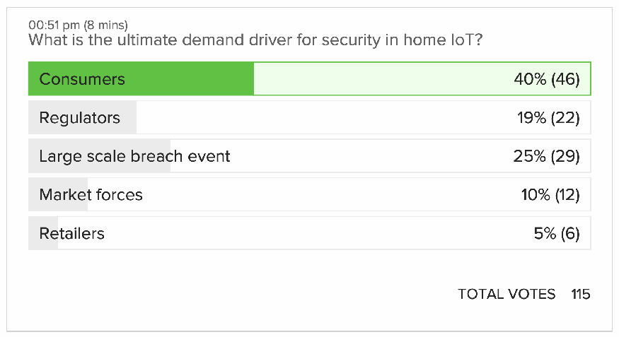
投票結果の画面です。見出しは「00:51 pm (8 mins)」、質問は「家庭用IoTのセキュリティに対する最終的な需要を生み出す要因は何か」です。選択肢と割合（票数）は、消費者 40%（46）（最多として緑で強調）、規制当局 19%（22）、大規模な侵害事件 25%（29）、市場の力 10%（12）、小売業者 5%（6）です。各行は割合に応じて塗られています。総投票数は115です。
A.2 Willingness to Pay More for Security in Low-Cost IoT Devices
A.2 低価格の IoT デバイスのセキュリティにより多く支払う意思
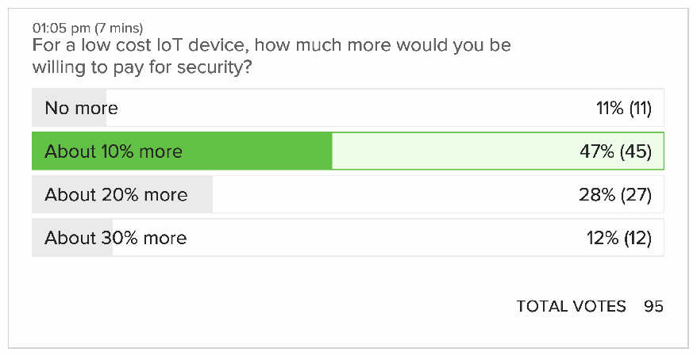
投票結果の画面です。見出しは「01:05 pm (7 mins)」、質問は「低価格のIoTデバイスで、セキュリティのためにどれだけ多く支払ってもよいか」です。選択肢と割合（票数）は、これ以上は払わない 11%（11）、約10%増し 47%（45）（最多として緑で強調）、約20%増し 28%（27）、約30%増し 12%（12）です。各行は割合に応じて塗られています。総投票数は95です。
A.3 Primary Responsibility for Home IoT Device Security
A.3 家庭用 IoT デバイスのセキュリティに対する第一義的な責任
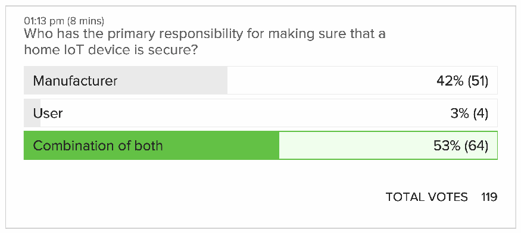
投票結果の画面です。見出しは「01:13 pm (8 mins)」、質問は「家庭用IoTデバイスが安全であることを確保する主な責任は誰にあるか」です。選択肢と割合（票数）は、製造業者 42%（51）、利用者 3%（4）、両者の組み合わせ 53%（64）（最多として緑で強調）です。各行は割合に応じて塗られています。総投票数は119です。
A.4 Reason for Interest in Home IoT Cybersecurity
A.4 家庭用 IoT のサイバーセキュリティに関心を持つ理由
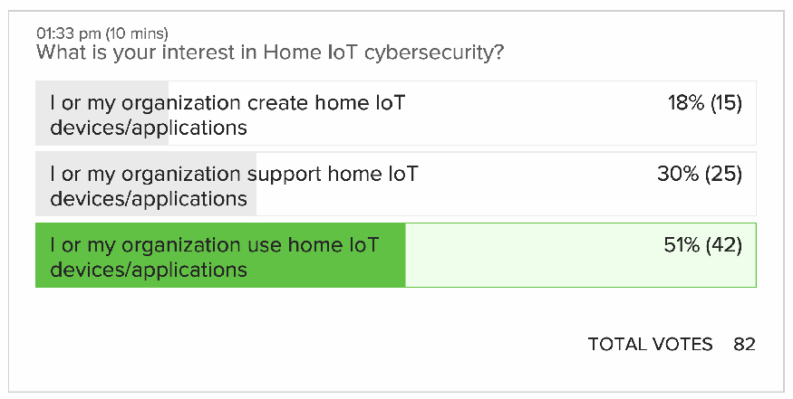
投票結果の画面です。見出しは「01:33 pm (10 mins)」、質問は「家庭用IoTのサイバーセキュリティへの関心は何か」です。選択肢と割合（票数）は、自分または自組織が家庭用IoTデバイス・アプリケーションを作る 18%（15）、支援する 30%（25）、使用する 51%（42）（最多として緑で強調）です。各行は割合に応じて塗られています。総投票数は82です。
A.5 Biggest Cybersecurity Challenge for IoT Devices for Home Customers
A.5 家庭向け顧客の IoT デバイスにおける最大のサイバーセキュリティ上の課題
![Poll result screenshot. Header: “01:54 pm (19 mins)”. Question: “What is the biggest cybersecurity challenge around IoT devices for home customers?” Options, percentage (votes): Identifying IoT devices on the network 2% (2); Adequately configuring IoT devices 21% (19); Protecting data on or being transmitted from IoT devices 34% (30), highlighted in green as the most popular; Controlling access to the IoT device’s interfaces 10% (9); Updating IoT device software 9% (8); Being aware of cybersecurity events on or related to the IoT device 21% (19). Each row is shaded in proportion to its share. TOTAL VOTES 87.](assets/ir-8333/p0021-figure-01.png)
投票結果の画面です。見出しは「01:54 pm (19 mins)」、質問は「家庭の利用者にとって、IoTデバイスをめぐる最大のサイバーセキュリティ上の課題は何か」です。選択肢と割合（票数）は、ネットワーク上のIoTデバイスの識別 2%（2）、IoTデバイスの適切な設定 21%（19）、IoTデバイス上のデータ・IoTデバイスから送信されるデータの保護 34%（30）（最多として緑で強調）、IoTデバイスのインタフェースへのアクセス制御 10%（9）、IoTデバイスのソフトウェアの更新 9%（8）、IoTデバイスに関するサイバーセキュリティ事象の把握 21%（19）です。各行は割合に応じて塗られています。総投票数は87です。
A.6 Biggest and Most Impactful Force for Change
A.6 変化をもたらす最大かつ最も影響力のある力
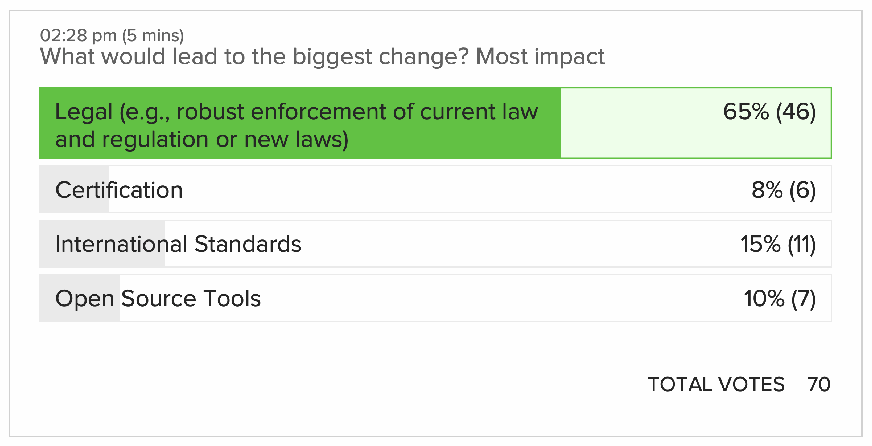
投票結果の画面です。見出しは「02:28 pm (5 mins)」、質問は「最大の変化をもたらすものは何か（最も影響が大きいもの）」です。選択肢と割合（票数）は、法的措置（現行の法規制の厳格な執行や新法など）65%（46）（最多として緑で強調）、認証 8%（6）、国際標準 15%（11）、オープンソースのツール 10%（7）です。各行は割合に応じて塗られています。総投票数は70です。
Appendix B—Acronyms
附属書 B—頭字語
Selected acronyms and abbreviations used in this paper are defined below.
本書で使用している主な頭字語と略語を、以下に定義します。
CTA
Consumer Technology Association
CTA
Consumer Technology Association
FOIA
Freedom of Information Act
FOIA
情報自由法
IoT
Internet of Things
IoT
モノのインターネット
IT
Information Technology
IT
情報技術
ITL
Information Technology Laboratory
ITL
情報技術研究所
MFA
Multi-Factor Authentication
MFA
多要素認証
NCCoE
National Cybersecurity Center of Excellence
NCCoE
国家サイバーセキュリティ・センター・オブ・エクセレンス
NIST
National Institute of Standards and Technology
NIST
米国国立標準技術研究所
NISTIR
National Institute of Standards and Technology Interagency or Internal Report
NISTIR
米国国立標準技術研究所省庁間・内部報告書
SP
Special Publication
SP
特別刊行物